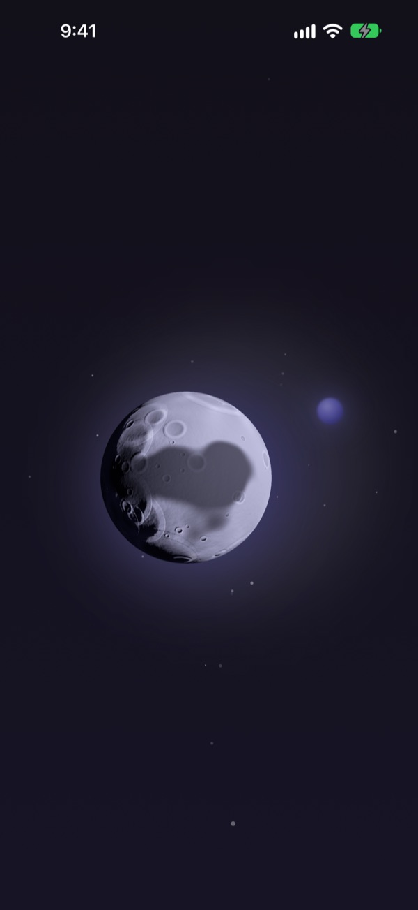
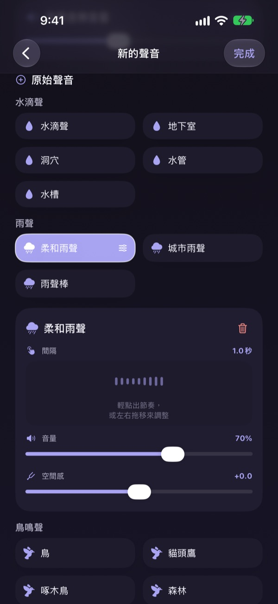
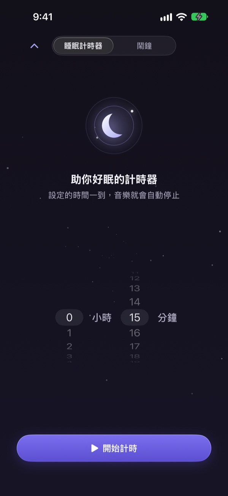
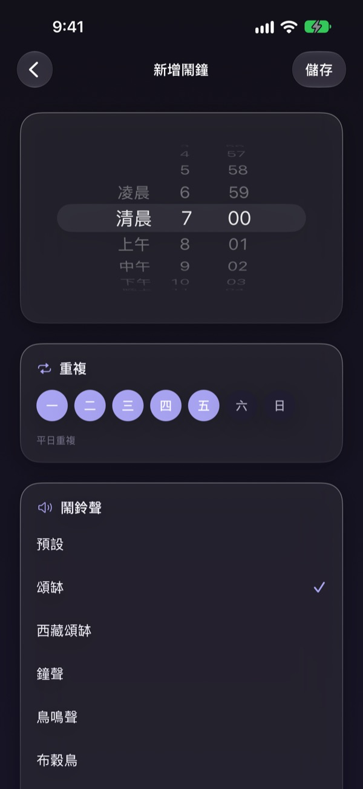
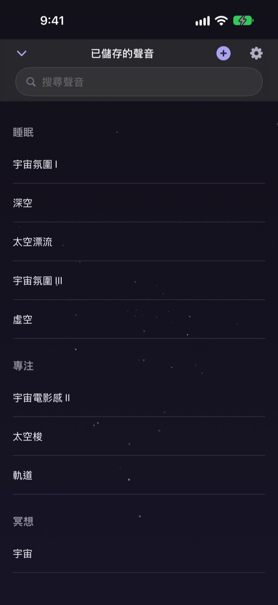

睡前光是挑聲音就花了一個小時？
雨聲太單調，海浪太吵，放個影片中途還插廣告。Dalbit 讓你把喜歡的聲音親手疊在一起，調成最合耳朵的樣子，再把它收進一輪月亮裡。
把喜歡的聲音疊在一起
雨聲、水滴、鳥鳴、頌缽，一層層疊上去。每一層都能調整音量、出現的間隔和聲音的位置，還能鋪上海浪或鋼琴當背景音樂。
做好的聲音取個名字儲存，隨時都能再拿出來。

睡著後悄悄停下，不把你吵醒
睡眠計時器不會突然切斷聲音，而是慢慢轉小再停下，讓結束的那一刻不會把你驚醒。
關掉螢幕或切到其他 App，聲音照樣繼續；放著不動，螢幕也會自己變暗。

早上用溫柔的聲音叫醒你
用頌缽、西藏頌缽、鳥鳴、布穀鳥等聲音設定鬧鐘，也能依星期重複。

一輪月亮全部搞定
點一下月亮開始播放，再點一下暫停。左右滑換聲音，往上滑打開睡眠計時器，往下滑打開已儲存的聲音。
聽到喜歡的聲音，長按月亮就能加入收藏。

三個步驟就能開始
- 1
點一下月亮
打開 App，點月亮，聲音馬上響起。
- 2
左右滑一滑
一直滑到聽起來順耳的聲音為止。
- 3
設好時間，躺下
往上滑設定時間，時間到後聲音會慢慢消失。
月亮能做什麼
- 點一下
- 播放、暫停
- 左右滑動
- 切換聲音
- 往上滑
- 睡眠計時器與鬧鐘
- 往下滑
- 已儲存的聲音
- 長按
- 加入收藏
也可以用鎖定畫面上的播放控制來暫停與繼續。
收聽免費，想做更多就用進階版
免費
- 收聽所有聲音
- 疊加聲音做出自己的聲音
- 最多儲存 3 個自己的聲音
- 慢慢淡出的睡眠計時器
- 溫柔的聲音鬧鐘
- 收藏
Dalbit 進階版
- 不限數量地製作與儲存自己的聲音
每月自動續訂，含免費試用
除非在目前週期結束前至少 24 小時取消，否則訂閱會自動續訂；免費試用結束後開始收費。使用條款適用 Apple 標準授權條款（EULA）。
常見問題
要怎麼播放和切換聲音？
點主畫面上的月亮開始播放，再點一次停止。左右滑切換聲音，往上滑打開睡眠計時器，往下滑打開我的聲音。
關掉螢幕聲音會停嗎？
不會。關掉螢幕或切換到其他 App，聲音都會繼續播放。要停止，請再點一下月亮，或使用鎖定畫面上的播放控制。
睡眠計時器結束後會怎樣？
到了設定的時間，聲音不會突然中斷，而是慢慢變小後停止，這樣睡著後不會被吵醒。
鬧鐘沒有響。
第一次建立鬧鐘時需要允許鬧鐘權限。請到「設定」>「Dalbit」確認鬧鐘權限已開啟。
我做的聲音存在哪裡？
你做的聲音、鬧鐘和設定都只存在這台裝置上。刪除 App 會一起刪除，請留意。
免費可以用到什麼程度？
所有聲音都能聽，也能疊加聲音並儲存最多 3 個自己的聲音。睡眠計時器和鬧鐘也都免費。訂閱進階版後，自己的聲音可以不限數量地製作。
要怎麼取消訂閱？
前往「設定」>「Apple 帳號」>「訂閱項目」，選擇 Dalbit 即可取消。若未在目前週期結束前至少 24 小時取消，訂閱會自動續訂。
換了手機，訂閱不見了。
用同一個 Apple 帳號登入，在 Dalbit 的訂閱畫面點「回復購買」，訂閱就會重新生效。
想回報問題或提出功能建議。
請使用 App 設定中的「意見回饋」，或寄信到下方的地址。我們通常會在幾天內回覆。
有任何問題或想法，請寫信到 mizzking75@gmail.com。